LE RETI
NOME
IMMAGINE
DESCRIZIONE
VANTAGGI E SVANTAGGI
RETE PUNTO
A PUNTO
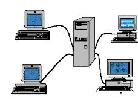
UNA RETE PUNTO A PUNTO E REALIZZATA UNENDO OGNI DEVICE DELLA RETE CON UN CAVO
VANTAGGI
1) OGNI NODO PUO PARKARE DIRETTAMENTE CON TUTTI GLI ALTRI
2) E UNA RETE MOLTO VELOCE
SVANTAGGI
1) il costo delle reti e molto alto
2) i device speciali cioe con tante scchede di rete quanti sono i nodi.
RETE A STELLE
UN ARETE A STELLA FUNZIONA COLLEGANDO TUTTI I DEVICE A PUNTO CENTRALE
QUESTO NODO CENTRALE PUO ESSERE UN COMPUTER SPECIALE OP UN HUB O UN SWUTCH
vantaggi
1) E UNA RETE SEMPLICE DA REALIZZARE
2) E MOLTO ECONOMICA
SVANTAGGI
1) NEL CASO SI ROMPA IL NODO CENTRALE LA RETE NON FUNZIONA PIU
2) TUTTE LE COMUNICAZIONI PASSANO NEL NODO CENTRALE CHE SE NON E BEN PROGRAMMATO LASCIA VEDERE
I DATI AGLI ALTRI NODI
ANELLO DI RETE
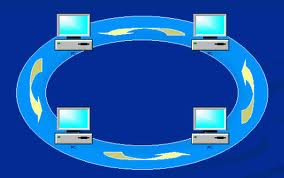
OGNI NODO SIA COLLEGATO AD ALTRI DUE.
VANTAGGI
1) E UNA RETE SEMPLICE
2) E UNA RETE SEMPLICE DA ESPANDERE
SVANTAGGI
1) LA ROTTURA DI UN NODO BLOCCA TUTTA LA COMUNICAZIONE
2) PER PARLARE TRA I DUE NODI POTREBBE ESSERE NECESSARIO PASSARE PER TUTTI GLI ALTRI NODI DELLA RETE
RETE A BUS

LA RETE A BUS E UN CAVO DEVICE SPECIALE
e una variante di rete magliata non completamente connessa,
che si può modellizzare anche come un insieme di reti a stella interconnesse< tra loro in modo gerarchico
VANTAGGI
1) ECONOMICA E SEMPLICE DA REALIZZARE
svantaggi
1)SE SI ROMPE UN TERMINATORE LA RETE NON FUNZIONA PIUrete ad albero

vantaggi
1)e adatta a gestire piccoli gruppi che devono condividere risorse
2)la rottura di un nodo consente ad altri pezzi di rete di funzionare
svantaggi
1)e una rete complicata da realizzare e mantenere
2)l'aggiunta di un nodo puo richiedere configurazioni complesse
TIPOLOGIE DI RETE
NOME
IMMAGINI
DESCRIZIONE
VANTAGGI/SVANTAGGI
LAN

local area
network
vantaggi
1) e una rete semplice
2)e uan rete facilmente ampliabile
svantaggi
1)e adatta a piccole aree.
2)ha una sicurezza limitata.
CAN
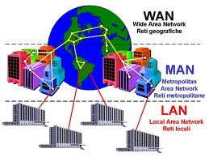
campus area
network
E UNA RETE PIU GRANDE E COMPLESSA DI UNA LAN COPRE NORMALMENTE PIU EDIFICI VICINI ED E COMPOSTA DA SOTTO RETI LAN.
vantaggi
1)normalmente e piu sicura di una lan
2)consente la condivisione di risorse azziendali senza accesso ad internet
svantaggi
1)e normalmente e piu costosa
2)e piu complessa
MAN
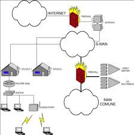
metropolitan area
network
e una rete che copre parti di uan citta.
e normalmente composta da sottoreti can
vantaggi
1)consente di condividere risorse azziendali anche tra sedi diverse
2)e una rete sicura.
svantaggi
1)E UNA RETE COMPLICATA e costosa
2) non e sempre possibile realizzarla
WAN
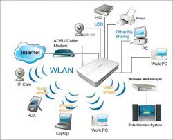
wide area network e un rete he copre varie regioni della terra
vantaggi
1)consente di realizzare una rete parallela ad internet
2) e una rete sicura
svantaggi
1)ha dei costi addirittura altissimi
2)e una rete complicata da realizzare e da gestire
WLAN
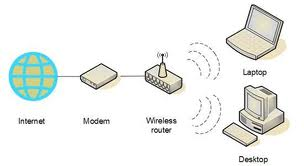
e una rete che si basa sul uso dei componenti
vantaggi
1) e una rete semplice da realizare e gestire
2)e la rete piu economica da realizzare.
svantaggi
1) e un arete poco sicura
2) le prestazioni offerte non sono molto buone
| NOME | IMMAGINE | DESCRIZIONE | VANTAGGI E SVANTAGGI | RETE PUNTO A PUNTO |
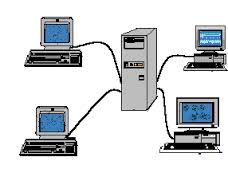 | UNA RETE PUNTO A PUNTO E REALIZZATA UNENDO OGNI DEVICE DELLA RETE CON UN CAVO | VANTAGGI1) OGNI NODO PUO PARKARE DIRETTAMENTE CON TUTTI GLI ALTRI2) E UNA RETE MOLTO VELOCE SVANTAGGI1) il costo delle reti e molto alto2) i device speciali cioe con tante scchede di rete quanti sono i nodi. |
RETE A STELLE | UN ARETE A STELLA FUNZIONA COLLEGANDO TUTTI I DEVICE A PUNTO CENTRALE QUESTO NODO CENTRALE PUO ESSERE UN COMPUTER SPECIALE OP UN HUB O UN SWUTCH |
vantaggi 2) E MOLTO ECONOMICA SVANTAGGI1) NEL CASO SI ROMPA IL NODO CENTRALE LA RETE NON FUNZIONA PIU2) TUTTE LE COMUNICAZIONI PASSANO NEL NODO CENTRALE CHE SE NON E BEN PROGRAMMATO LASCIA VEDERE I DATI AGLI ALTRI NODI ANELLO DI RETE |
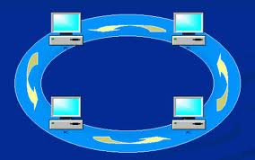 |
OGNI NODO SIA COLLEGATO AD ALTRI DUE. |
|
VANTAGGI1) E UNA RETE SEMPLICE2) E UNA RETE SEMPLICE DA ESPANDERE SVANTAGGI1) LA ROTTURA DI UN NODO BLOCCA TUTTA LA COMUNICAZIONE2) PER PARLARE TRA I DUE NODI POTREBBE ESSERE NECESSARIO PASSARE PER TUTTI GLI ALTRI NODI DELLA RETE RETE A BUS |
|
LA RETE A BUS E UN CAVO DEVICE SPECIALE |
e una variante di rete magliata non completamente connessa, |
che si può modellizzare anche come un insieme di reti a stella interconnesse< tra loro in modo gerarchico VANTAGGI1) ECONOMICA E SEMPLICE DA REALIZZAREsvantaggi1)SE SI ROMPE UN TERMINATORE LA RETE NON FUNZIONA PIUrete ad albero |
|
| |
vantaggi1)e adatta a gestire piccoli gruppi che devono condividere risorse2)la rottura di un nodo consente ad altri pezzi di rete di funzionare svantaggi1)e una rete complicata da realizzare e mantenere2)l'aggiunta di un nodo puo richiedere configurazioni complesse |
TIPOLOGIE DI RETE
| NOME | IMMAGINI | DESCRIZIONE | VANTAGGI/SVANTAGGI | LAN | |
local area network |
vantaggi1) e una rete semplice2)e uan rete facilmente ampliabile svantaggi1)e adatta a piccole aree.2)ha una sicurezza limitata. |
CAN | 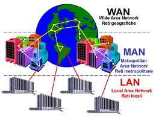 | campus area network E UNA RETE PIU GRANDE E COMPLESSA DI UNA LAN COPRE NORMALMENTE PIU EDIFICI VICINI ED E COMPOSTA DA SOTTO RETI LAN. |
vantaggi1)normalmente e piu sicura di una lan2)consente la condivisione di risorse azziendali senza accesso ad internet svantaggi1)e normalmente e piu costosa2)e piu complessa |
MAN | 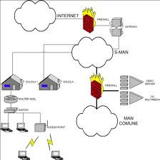 | metropolitan area network e una rete che copre parti di uan citta. e normalmente composta da sottoreti can |
vantaggi1)consente di condividere risorse azziendali anche tra sedi diverse2)e una rete sicura. svantaggi1)E UNA RETE COMPLICATA e costosa2) non e sempre possibile realizzarla |
WAN | 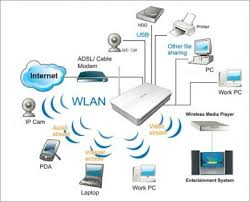 | wide area network e un rete he copre varie regioni della terra | vantaggi1)consente di realizzare una rete parallela ad internet2) e una rete sicura svantaggi1)ha dei costi addirittura altissimi2)e una rete complicata da realizzare e da gestire |
WLAN | 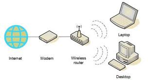 | e una rete che si basa sul uso dei componenti | vantaggi1) e una rete semplice da realizare e gestire2)e la rete piu economica da realizzare. svantaggi1) e un arete poco sicura2) le prestazioni offerte non sono molto buone |